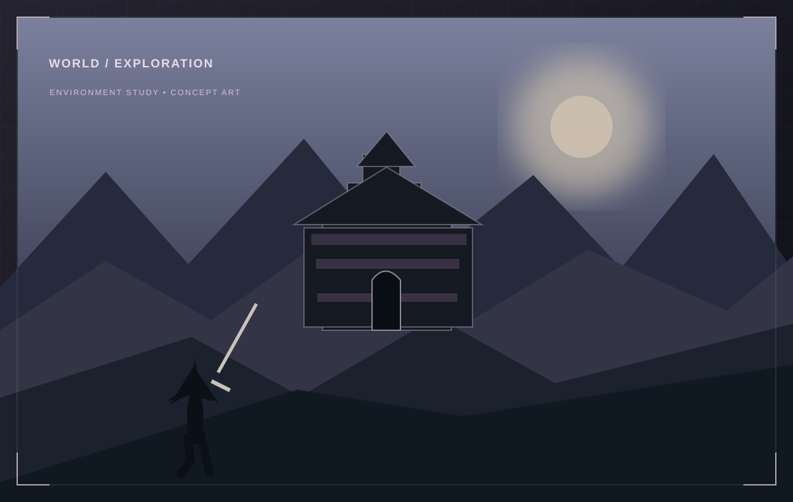

01 / GAME
ARC — Asian Royal Conquest
An open-world game experiment where exploration, combat and enemy behaviour become systems to build and test.

CONCEPT ILLUSTRATIONWHAT I BUILT
An open-world action-adventure prototype with exploration, combat and enemy AI. The interesting part is not one isolated mechanic, but how those systems meet inside a playable space.
HOW IT WORKS
The project uses Unreal Engine as the environment for combining gameplay rules, world interaction and artificial behaviour. I treat each mechanic as a system with inputs, state and feedback, then connect those systems until the world starts producing situations rather than scripted moments.
WORLDPLAYERENEMY AIFEEDBACK
WHAT I LEARNED
REFLECTION
Game development pushed me to think about systems as something the player experiences indirectly. Enemy behaviour, movement and world design only matter when their interaction creates a readable decision for the player.
EXPLORE THE PROJECT